À propos
Titulaire d'un Baccalauréat en systèmes informatiques et électroniques à l'UQAM, avec une expertise en conception de systèmes embarqués et connectés (IoT, électronique numérique/analogique, FPGA, VHDL, PCB) et en développement logiciel (Java, C++, SQL).
Expérience concrète en instrumentation, acquisition de données et interfaces de suivi énergétique, acquise à travers des projets académiques menés seul ou en équipe, en Agile/Scrum et en cascade.
Ponctuel, calme sous pression et à l'écoute des autres, une rigueur que je cultive aussi par la natation, le vélo et l'entraînement.
En bref
- LieuMontréal, Canada
- FormationBacc. Systèmes info. & électro.
- ÉtablissementUQAM
- DiplômeObtenu — Août 2026
- FrançaisCourant
- AnglaisNotions de base
Compétences
Systèmes embarqués & FPGA
- VHDL
- STM32CubeIDE
- Vivado
- ModelSim
- PSoC Creator
- Keil
- Arduino IDE
Électronique & simulation
- LTSpice
- HSpice
- MATLAB
- Cadence
- COMSOL Multiphysics
- Conception PCB
Fabrication & prototypage
- Soudure électronique
- Assemblage de circuits/composants
Programmation & base de données
- Java
- C++
- Python
- SQL
- Assembleur (RISC-V)
Réseaux
- Cisco Packet Tracer
- Wireshark
Développement & outils
- Visual Studio Code
- Eclipse
- NetBeans
- IntelliJ
- Oracle / SQL Developer
- Git
- Trello
Bureautique & documentation
- Microsoft Office (Outlook, Word, Excel, Visio)
- Overleaf
- Visual Paradigm
Méthodologies : Agile · Scrum · Cascade | OS : Windows · macOS · Linux
Projets techniques
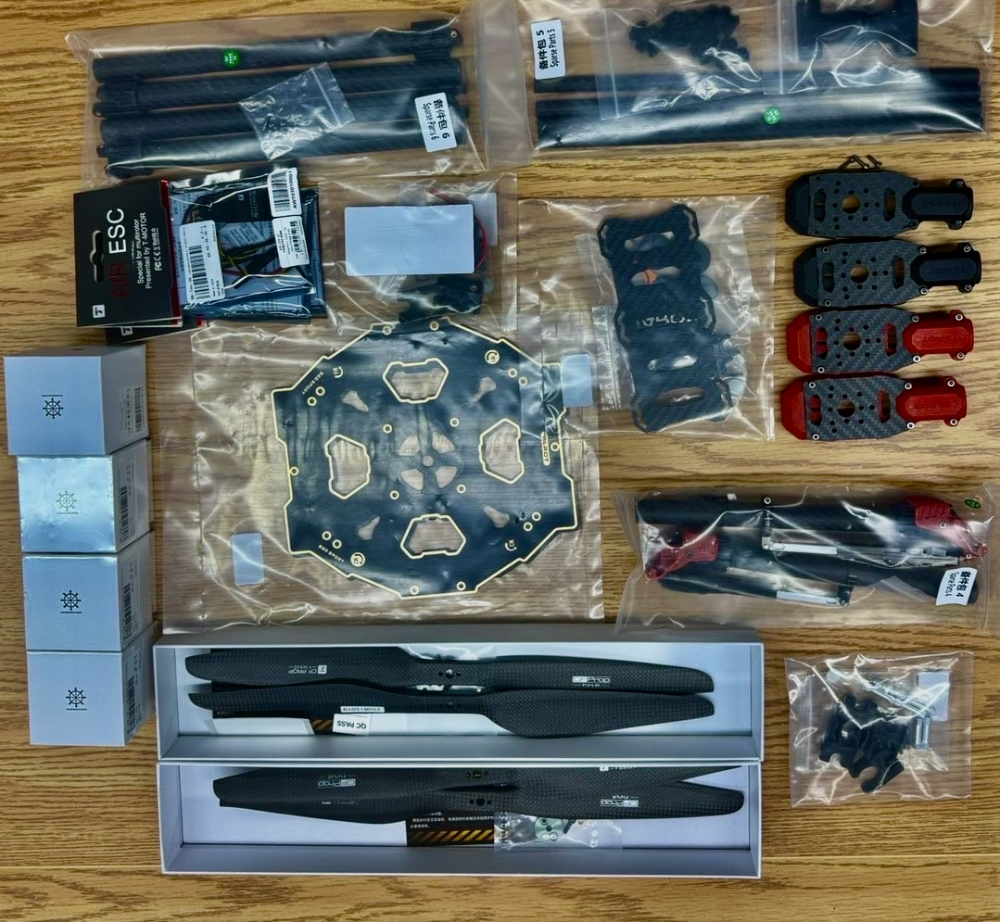
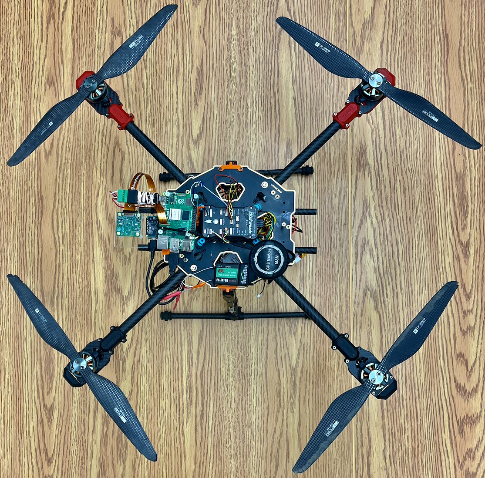
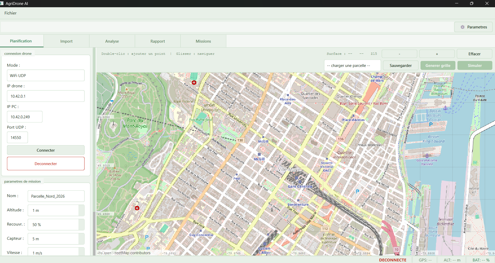
Drone automatisé — AgriDrone AI
Un drone autonome survole les parcelles agricoles pour capter des images thermiques et repérer les zones de stress hydrique ou de maladie des cultures. Les données sont ensuite analysées par un modèle d'IA et présentées dans une application dédiée, offrant un diagnostic rapide sans intervention manuelle.
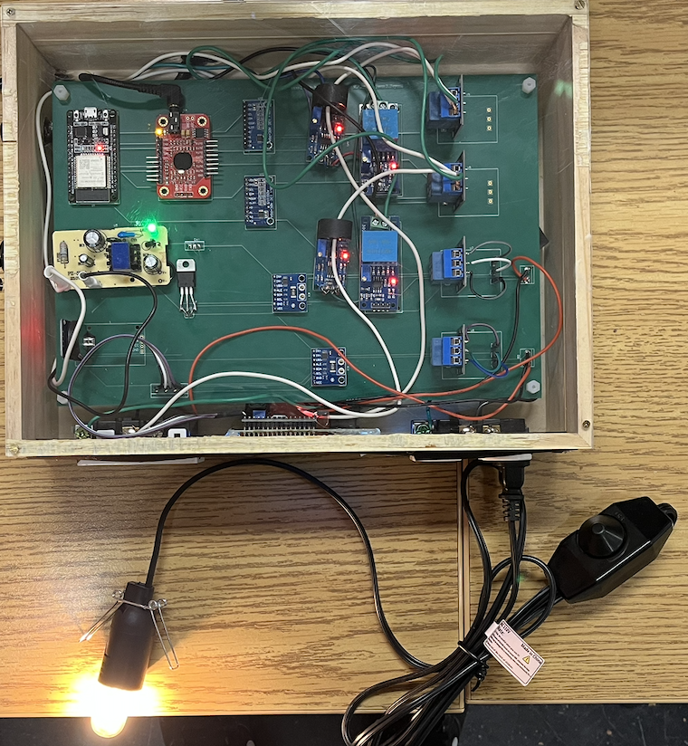
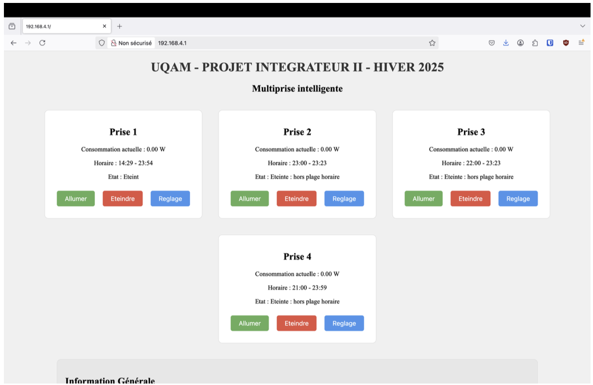
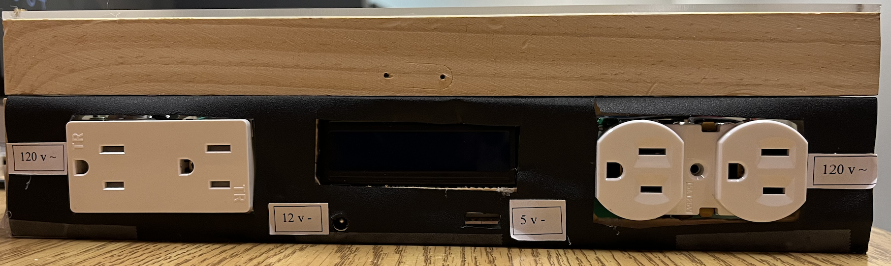
Multiprise intelligente
Une multiprise connectée qui protège les appareils branchés (surtension, surcharge, court-circuit) tout en mesurant la consommation prise par prise. Programmable par plages horaires et pilotable depuis une interface web.
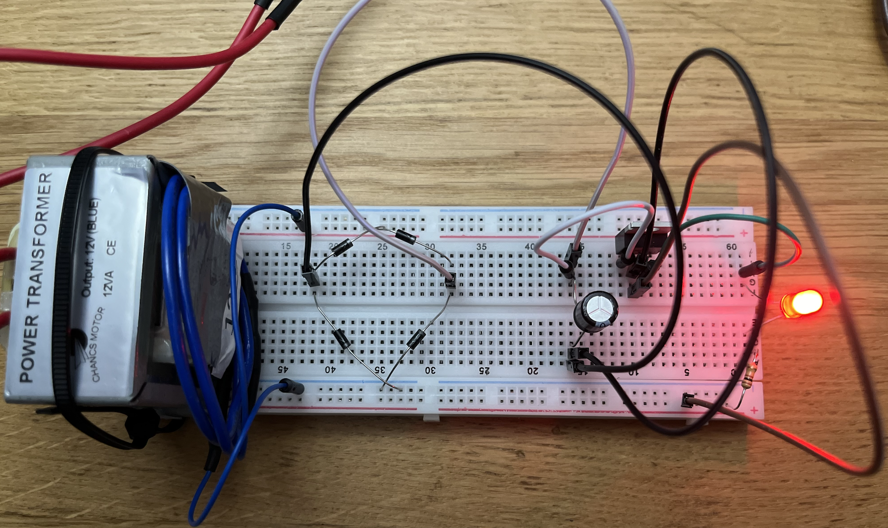
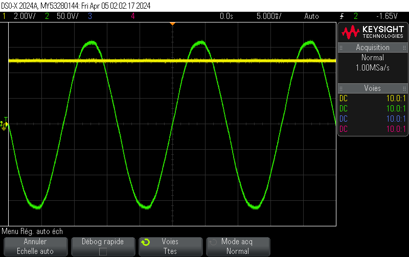
Alimentation stabilisée
Circuit convertissant le 110V AC du secteur en 5V DC stable, en combinant redressement, filtrage et régulation. Simulé sous LTSpice avant montage, il fournit une tension continue propre, prête à alimenter des circuits électroniques sensibles.
Course aux LED — système numérique sur FPGA
Jeu de réflexes entièrement câblé en logique numérique sur carte FPGA Nexys Video : deux joueurs s'affrontent au bouton, et le numéro du gagnant s'affiche sur les afficheurs 7 segments. Chaque module a été conçu en VHDL et validé par des bancs d'essai sous ModelSim.
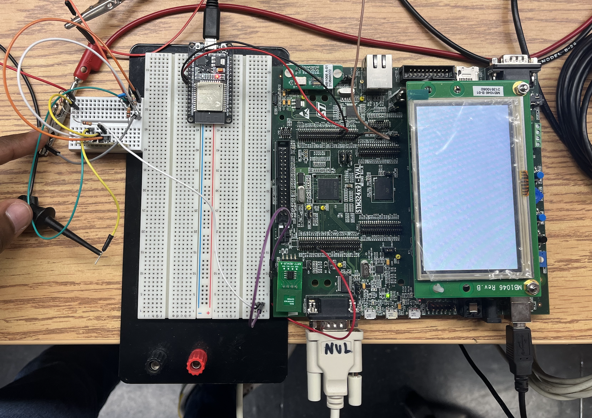
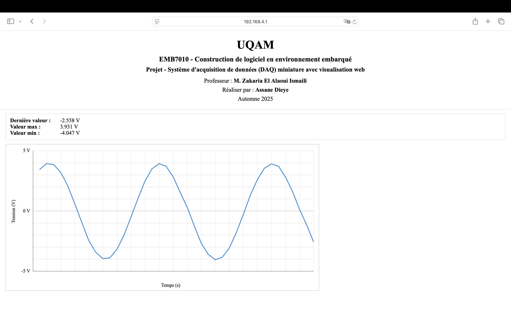
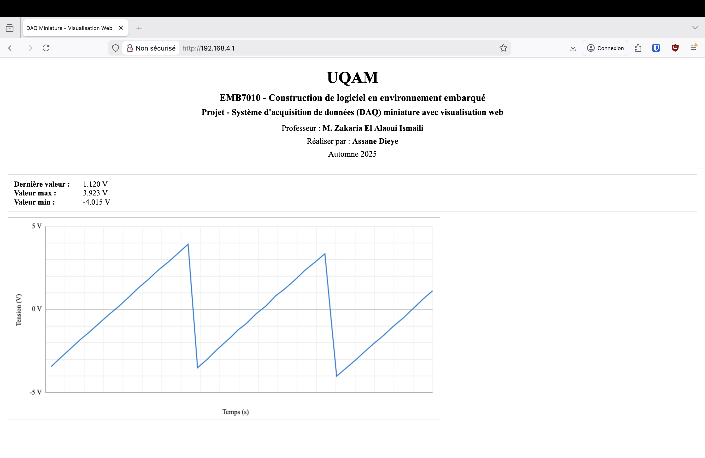
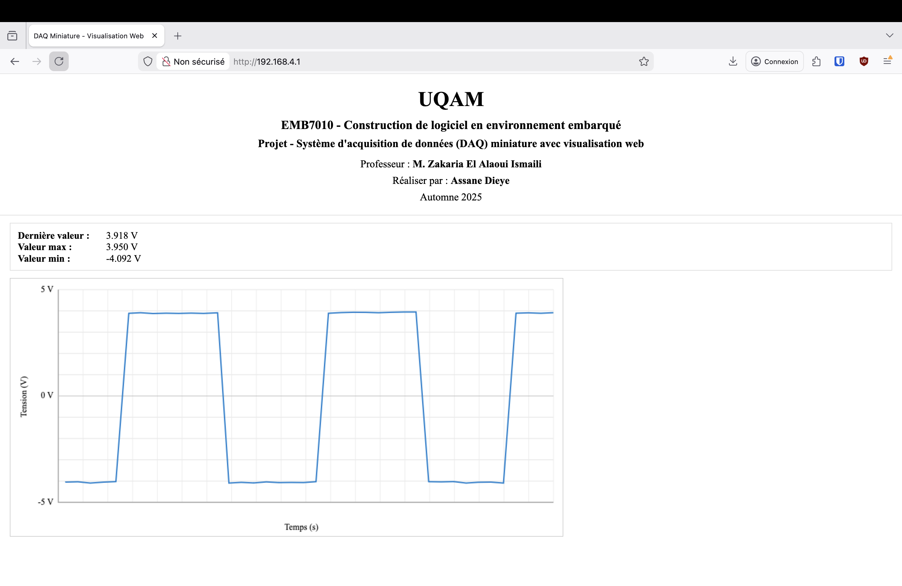
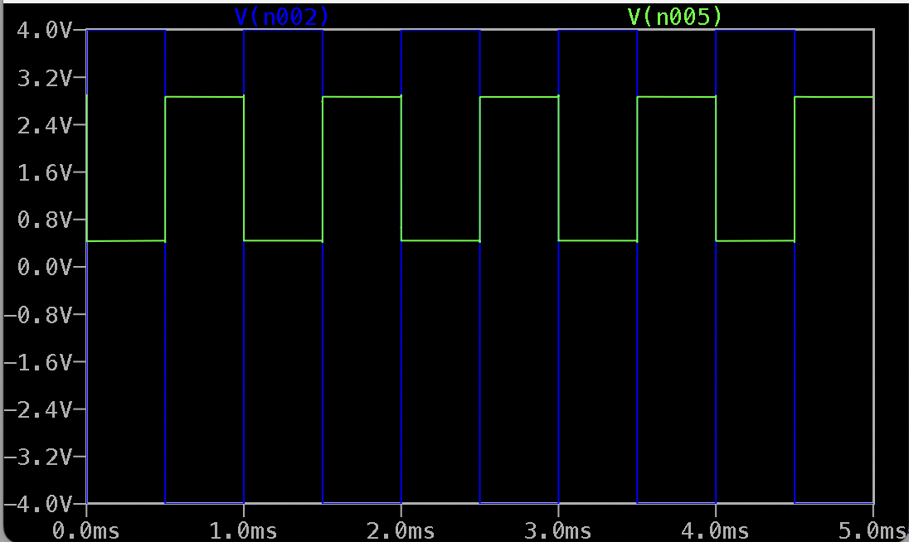
Système d'acquisition de données (DAQ)
Système d'acquisition miniature qui échantillonne des signaux analogiques (-5V à 5V) — sinusoïdaux, carrés, en rampe — grâce à un microcontrôleur, puis les transmet à une interface web pour un affichage en temps réel. Un exercice complet d'instrumentation, du capteur jusqu'à la visualisation.
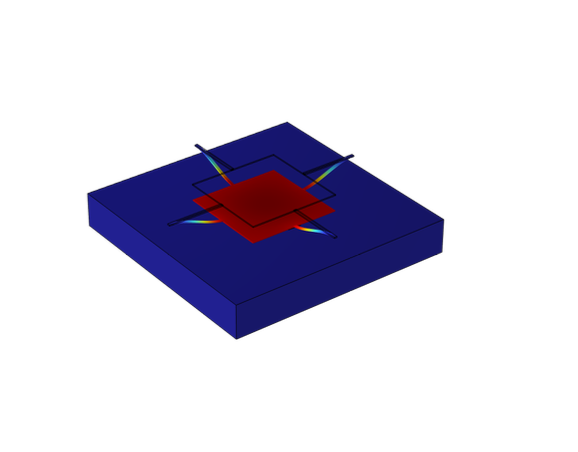
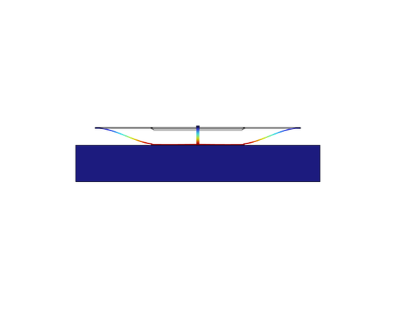
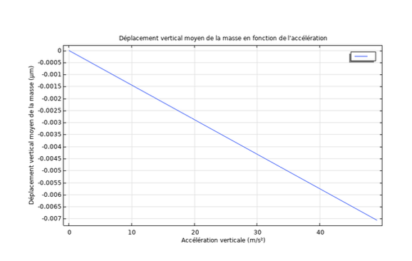
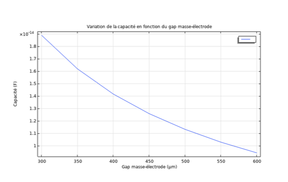
Capteur de vibration MEMS
Modélisation et simulation multiphysique d'un capteur de vibration MEMS à détection capacitive sous COMSOL. L'étude du comportement mécanique et électrique de la structure confirme une détection fiable des vibrations, une étape clé avant tout prototypage physique.
Réalisations académiques
Développement logiciel
- Conception orientée objet et implémentation de règles d'affaires pour un système de gestion de projets ; types de données abstraits et programmation générique testés en JUnit ; traitement par streams et expressions lambda (Java).
- Plateforme de publication/recherche de documents perdus (SQL Developer).
- Tri chronologique de dates via liste doublement chaînée en RISC-V.
- Manipulation de structures de données en C++.
Traitement du signal & systèmes embarqués
- Filtres numériques (RIF/RII), analyse spectrale FFT, modulation analogique/numérique, conversion CAN/CNA, circuits MOSFET, amplificateurs et redresseurs.
- Simulation multiphysique (COMSOL) de systèmes mécaniques et électriques.
- Conception de circuits imprimés (PCB) et modélisation 3D.
- Interfaçage de périphériques (claviers matriciels, écrans, capteurs, etc.) via protocoles GPIO, I2C, SPI et UART sur microcontrôleurs.
Recherche
- Étude d'articles scientifiques et recherche appliquée sur les systèmes neuromorphiques.
Expérience professionnelle
Auxiliaire d'enseignement
Soutien pédagogique et technique aux étudiants, encadrement en laboratoire, correction de travaux et représentation du programme.
- MIC4101 — Électronique analogique et numérique
- MIC3220 — Signaux et systèmes
- MIC1117 — Électronique pratique et projet intégrateur
- Surveillant d'examen — MAT2082
- Représentant du programme (journée porte ouverte & Université d'un jour)
- Mentorat Défi Techno